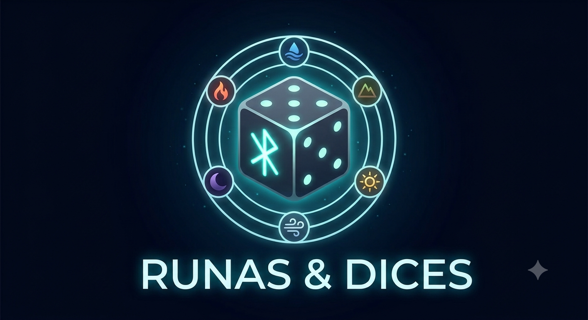

Diseño de clases para implementar el juego por etapas, aplicando Expert, SRP, alta cohesión y bajo acoplamiento.
El bot y los comandos no conocen las reglas internas. La solicitud atraviesa la fachada y llega a entidades y servicios del dominio.
Comandos como jugar una carta, atacar o terminar el turno.
Facade valida el caso de uso y devuelve Result.
Servicios y entidades aplican las reglas sin depender de Discord.
Game contiene exactamente dos Player. Cada jugador administra sus zonas y sus recursos.
Life · Ether · User
↓ posee
Deck · Hand · Board · Graveyard
Contiene Creature y Upgrade.
Las criaturas tienen habilidades y mejoras equipadas.
ActivePlayer · DefenderPlayer · GamePhase · GameState
Valida costos, fase, pertenencia y objetivo al jugar cartas.
Calcula valores efectivos, bloqueos, daño y destrucciones.
Coordina las fases de inicio, robo y finalización del turno.
| Clase | Responsabilidad | Razón de cambio | Coopera con |
|---|---|---|---|
| User | Identifica al usuario de la aplicación mediante UserName. | Cambios en la identidad del usuario. | UsersRepository, Player |
| Player | Mantiene vida, Ether y las zonas propias. Puede recibir daño, curarse, gastar Ether, robar y descartar. | Cambios en las reglas del estado individual del jugador. | User, zonas, Game, efectos |
| Game | Representa la partida, sus dos jugadores, la fase, el turno, el estado y el ganador. | Cambios en el ciclo de vida de la partida. | Player, TurnService, CombatResolver |
| Deck | Conserva el orden de las cartas, baraja y entrega la carta superior. | Cambios en las reglas del mazo o del robo. | Player, Card |
| Hand | Administra las cartas disponibles para jugar o descartar. | Cambios en las reglas de la mano y su límite. | Player, Card |
| Board | Conserva las cartas permanentes actualmente en juego y permite buscar criaturas y mejoras. | Cambios en las reglas del campo. | Creature, Upgrade, Player |
| Graveyard | Conserva cartas usadas, descartadas o destruidas. | Cambios en las reglas del cementerio. | Player, Card |
| Clase | Responsabilidad | Razón de cambio | Coopera con |
|---|---|---|---|
| Card | Define los datos comunes: nombre, costo y descripción. | Cambios en las propiedades compartidas por todas las cartas. | Creature, Spell, Upgrade |
| Creature | Mantiene ataque, defensa, habilidades y mejoras equipadas; calcula sus estadísticas modificadas. | Cambios en las reglas propias de criaturas. | Ability, Upgrade, CombatResolver |
| Spell | Representa un efecto inmediato y conserva los efectos que debe resolver. | Cambios en las reglas de hechizos. | Effect, EffectResolver, Dice |
| Upgrade | Valida su objetivo y modifica a una criatura o a un jugador mientras permanece activa. | Cambios en las reglas de equipamiento y mejoras. | Creature, Player, Effect |
| Ability | Asocia un disparador, como OnAttack, con un efecto. | Cambios en las reglas de activación de habilidades. | Creature, Upgrade, Effect |
| Effect | Contrato para aplicar una modificación concreta al juego. | Cambios en una regla de efecto específica. | Game, Player, Creature |
Creature, Spell y Upgrade heredan de Card. Los efectos concretos, como daño, curación o robo, implementan Effect y no se concentran en una clase gigante.| Clase | Responsabilidad | Razón de cambio | Coopera con |
|---|---|---|---|
| IDice | Define la operación común Roll(). | Cambios en la abstracción de lanzamiento. | Dados concretos, CombatResolver, EffectResolver |
| StandardNumericDice | Produce valores del dado numérico estándar. | Cambios en sus caras o distribución. | DiceResult |
| PowerDice / RiskDice | Producen resultados especializados para ataques potentes o variables. | Cambios en ese tipo de dado. | Ability, CombatResolver |
| HealingDice / RuneDice | Producen resultados de curación, protección o símbolos rúnicos. | Cambios en resultados de soporte o runas. | Spell, EffectResolver |
| DiceResult | Representa un resultado numérico, una runa o un efecto adicional. | Cambios en la representación de resultados. | IDice, EffectResolver |
| Attack | Representa una criatura atacante y, opcionalmente, su bloqueadora. | Cambios en los datos de una declaración de ataque. | Creature, CombatResolver |
| CombatResolver | Resuelve ataques, dados, bloqueos, comparación de estadísticas, daño y destrucción. | Cambios en las reglas de combate. | Attack, Creature, Player, IDice |
| CardPlayService | Valida y coordina el juego de una carta y su movimiento entre zonas. | Cambios en las reglas para jugar cartas. | Game, Player, cartas, EffectResolver |
| EffectResolver | Ejecuta efectos y procesa resultados de dados. | Cambios en la coordinación o secuencia de efectos. | Effect, IDice, Game |
| TurnService | Coordina las fases de inicio, robo, principal, combate y final. | Cambios en las reglas de las fases. | Game, Player, EffectResolver |
Player modifica su propia vida y Ether.Deck roba porque conoce el orden de sus cartas.Creature calcula sus estadísticas porque conoce sus bases y mejoras.Game cambia el jugador activo porque conoce a los participantes.CombatResolver compara ataque y defensa porque necesita dos criaturas.CombatResolver.Effect.Hand o la regla de fin de turno.Game no calcula daño ni interpreta cartas.Facade → UsersRepository → User → Player → Game → preparación de Deck y Hand.
Facade → CardPlayService valida fase, jugador, carta, costo y objetivo → Player paga Ether → la carta cambia de zona → EffectResolver ejecuta sus efectos.
Game identifica los roles → se crean Attack → CombatResolver lanza IDice → calcula valores efectivos → aplica daño o destruye criaturas → Game verifica el final.
| Historias | Clases centrales | Resultado |
|---|---|---|
| 1 a 4 | Facade, User, UsersRepository, Result | Usuarios, lista de espera y emparejamiento. |
| 5 a 6 | Game, Player, Deck, Hand, TurnService | Preparación e inicio de turnos. |
| 7 a 8 | CardPlayService, cartas, EffectResolver, dados | Jugar cartas, pagar Ether y resolver efectos. |
| 9 a 11 | Attack, CombatResolver, Creature, dados | Declarar bloqueos y resolver combate. |
| 12 a 13 | TurnService, Hand, Graveyard, Game | Finalizar turnos y partidas. |